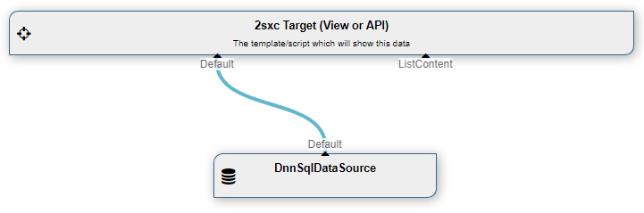

Class DnnSql
- Namespace
- ToSic.Sxc.Dnn.DataSources
- Assembly
- ToSic.Sxc.Dnn.Core.dll
Retrieves data from SQL, specifically using the DNN Connection String
Data Source: DnnSql
The DnnSql DataSource is part of the Standard Dnn Data Sources. It lets you use data from the Dnn SQL databases as if they were entities.
This is what it looks like:
How to use
Internally the DnnSqlDataSource is exactly the same as the Sql DataSource just with fewer options, because you cannot choose most of the settings. Please consult the Sql DataSource documentation to see how you can use it.
We recommend to use the VisualQuery where possible, as it's easier to understand and is identical for C# and JavaScript. It's also better because it separates data-retrieval from visualization.
Read also
Demo App and further links
You should find some examples in this demo App
History
- Introduced in EAV 3.x, in 2sxc ?
API Documentation
[PublicApi]
[VisualQuery(NiceName = "Dnn SQL", UiHint = "Data from the Dnn database", Icon = "dynamic_form", Type = DataSourceType.Source, NameId = "ToSic.Sxc.Dnn.DataSources.DnnSql, ToSic.Sxc.Dnn", DynamicOut = false, NameIds = new string[] { "ToSic.SexyContent.DataSources.DnnSqlDataSource, ToSic.SexyContent", "ToSic.SexyContent.Environment.Dnn7.DataSources.DnnSqlDataSource, ToSic.SexyContent" }, HelpLink = "https://github.com/2sic/2sxc/wiki/DotNet-DataSource-DnnSqlDataSource", ConfigurationType = "|Config ToSic.SexyContent.DataSources.DnnSqlDataSource")]
public class DnnSql : Sql, IDataSource, IAppIdentity, IZoneIdentity, IAppIdentityLight, ICacheKey, ICacheExpiring, ITimestamped, IHasLog, IDataSourceLinkable- Inheritance
-
objectServiceBaseDnnSql
- Implements
- Inherited Members